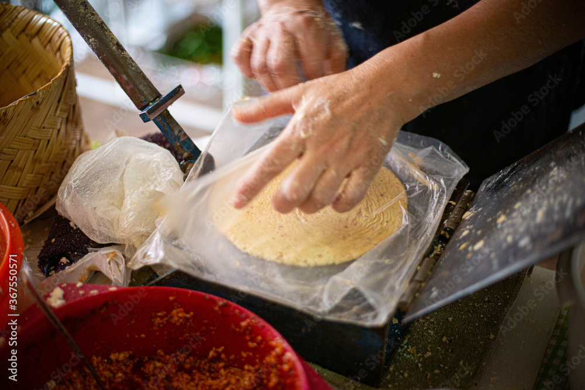
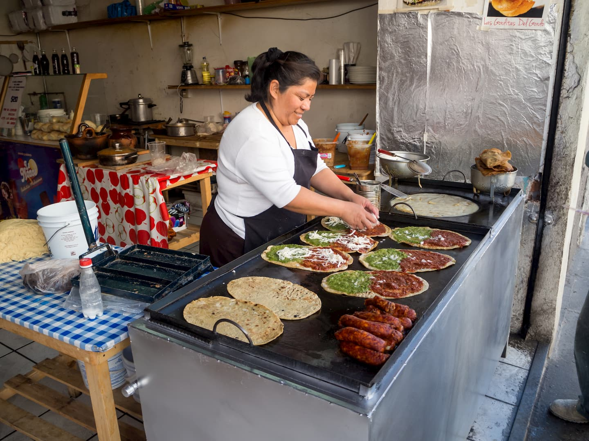
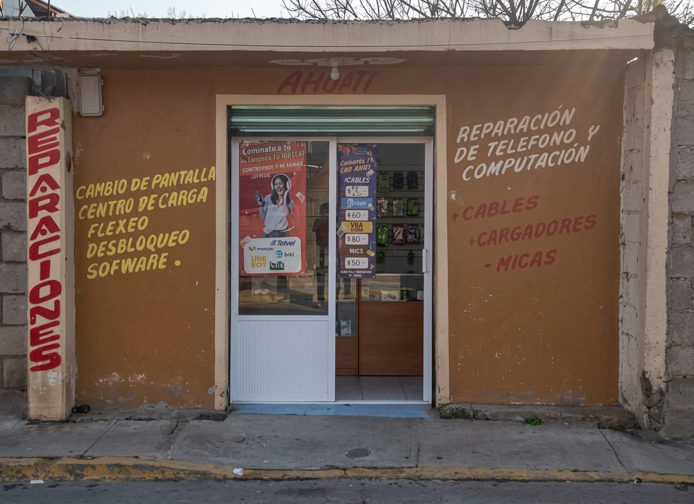
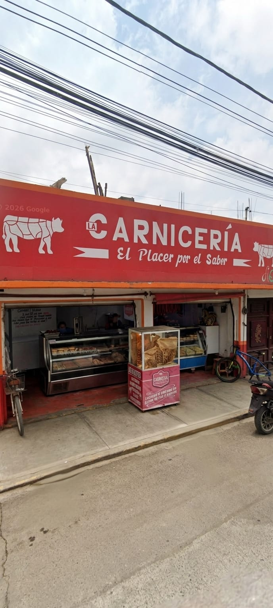
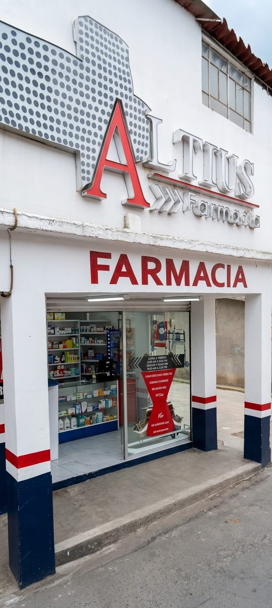
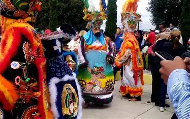
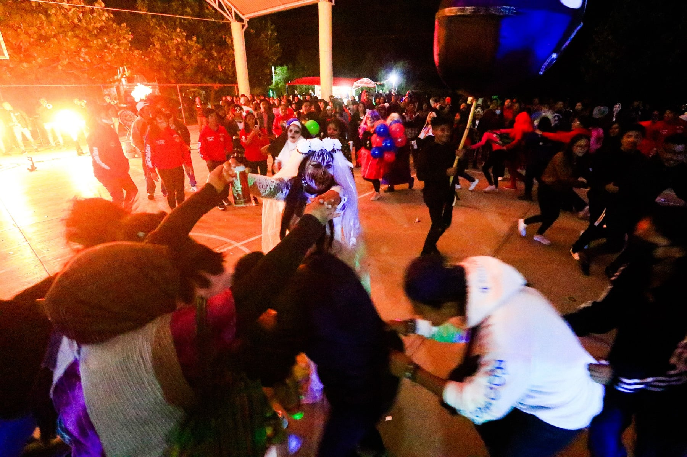

Una comunidad ubicada en la región de los volcanes del Estado de México, reconocida por sus tradiciones, su riqueza cultural y el espíritu de trabajo de sus habitantes.

San Francisco Zentlalpan se encuentra a 3.2 kilómetros al suroeste de Amecameca de Juárez. Su nombre proviene de las raíces: Zen (pedazo), Tlalli (tierra) y Pan (sobre), cuyo significado es: “Pedazo sobre la tierra”.
19.14986° N
98.78548° O
2,460 m
56930
2,024
1,064
960
491
La comunidad presenta una edad promedio de 27 años y una escolaridad aproximada de 9 años cursados.






Las principales actividades económicas de la comunidad están relacionadas con el comercio local, la agricultura y diversos oficios.
Jardín de Niños Laura Méndez de Cuenca.
Escuela Primaria Insurgentes.
Telesecundaria 0103 "Juan Aldama".
Telebachillerato Comunitario 54 y CBT No. 2 Amecameca.



Cada 4 de octubre se celebra la fiesta en honor a San Francisco de Asís con procesiones, chinelos, música de banda y fuegos artificiales.
El 2 de noviembre la comunidad realiza la tradicional muerteada, una celebración llena de música, disfraces y convivencia.
Cada 3 de mayo se celebra la Santa Cruz con ceremonias religiosas, banda musical y recorridos por la comunidad.